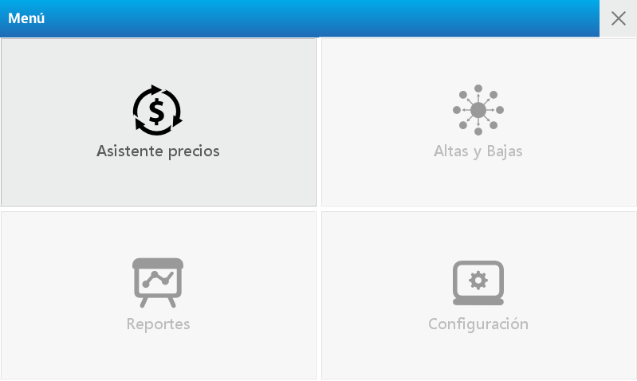
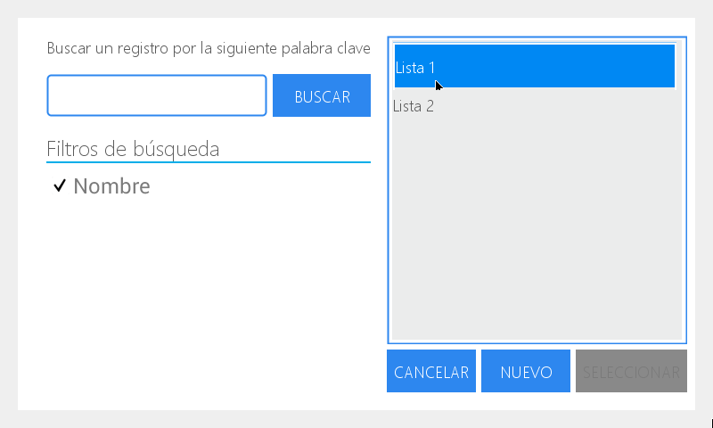
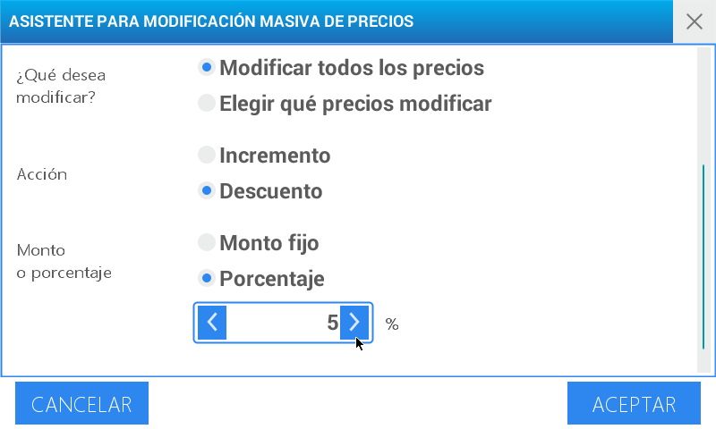

Price modification assistant
It allows you to modify a price list, to add an increase by percentage or by a fixed amount, and you can also add a general or specific discount.

As an example, we will make a 5% discount to all the products that are in the price list named as List 1
Enter the menu by pressing the key
Select user and enter the password. Then press
Choose the option Price Assistant located in the upper left quadrant of the screen.
Select the search option in the first field named Price List

Select Mass Modification
![Price Assistant]../../../../images/en/cuora-neo/cuora-neo-asistente1.png “Price Assistant”)
Choose List 1 and press Select

You can also enable the entry field to make a registry search with a keyword.
In case it is necessary, you can limit the search using the options Department and Group. In both cases the alternative search is executed following the steps previously outlined. And there is an extra possibility of deleting the selected registry by pressing (X) To use filters it is necessary to set them previouly. To do that check at: Menu: CRUD’s - Subsection Departments and Groups.
In the field What do you want to modify? choose Modify all prices
Then select the Action by pressing Discount
Then press Percentage in the line Amount or Percentage
Press on the % field to activate it and enter 5 using the numeric keypad

Press Enter
On the screen you will see an operation made confirmation message.